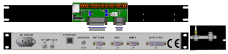
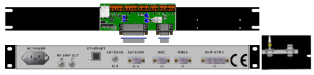

ABS (Auto beam Switching) & RX Lock
Using the links below you are able to switch between 2 satellites using ABS from the modem.Modem sends satellite A information to the Arbitrator via serial or openAMIP.
The satelite information will be passed on to the DAC's or MXP's from the arbitrator.
Then both antennas will target satellite A. Because both antennas are Targeting then TX mute to the modem will be active.
Both antennas are tracking satellite A. Because one of the antennas will be on satellite then TX mute to the modem will not be active.
Modem sends satellite B information to the Arbitrator via serial or openAMIP.
The satelite information will be passed on to the DAC's or MXP's from the arbitrator.
Then both antennas will target satellite B. Because both antennas are Targeting then TX mute to the modem will be active.
Both antennas are tracking satellite B. Because one of the antennas will be on satellite then TX mute to the modem will not be active.
The modem has RX lock.
The RX lock input on the arbitrator modem port has changed state,
this is passed on to the DAC's or MXP's via the RX lock pin on DAC A and DAC B ports to the DAC's or MXP's or via openAMIP.


 
